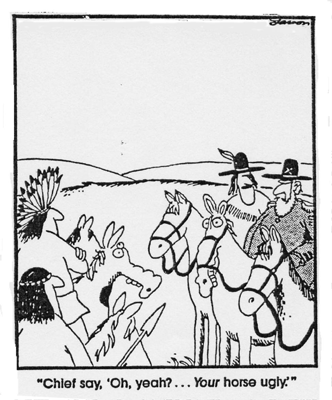
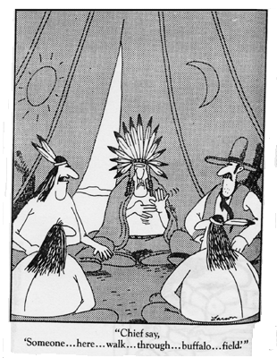

Note: If a flag is followed by this icon:  , there is an animated text in that country's sign language.
, there is an animated text in that country's sign language.
 cremedelalecram. (2006, January 27). A Blind's Date. A woman with a penchant for the impaired is suprised to learn that her (literally) blind date is bringing along his "visual interpreter." And he's a creep.
cremedelalecram. (2006, January 27). A Blind's Date. A woman with a penchant for the impaired is suprised to learn that her (literally) blind date is bringing along his "visual interpreter." And he's a creep.
kickered. (2006, November 2006). Deaf interpreter.
 Funny commercial from Holland. [Webmaster: At the end of the commercial, the slogan reads, "People that work hard, deserve Trek!".]
Funny commercial from Holland. [Webmaster: At the end of the commercial, the slogan reads, "People that work hard, deserve Trek!".]
Reichwein, M. J. (2006). Crouching Interpreter, Hidden Agenda. ,
, (
( ) A Japanese major introduces two friends of his to each other, but has to interpret for them since the girl doesn't speak English. But this interpreter has a hidden agenda...
) A Japanese major introduces two friends of his to each other, but has to interpret for them since the girl doesn't speak English. But this interpreter has a hidden agenda...
(2007). UK Candid Camera Classics - The Interpreter. The Candid crew hire an interpreter who is informed that there is a slight miscommunication between a couple. He soon finds out that this information is severly underated.
 council put up a Welsh language road sign reading "I am out of the office at the moment" when it should have said "No entry for heavy goods vehicles". Swansea council contacted its in-house translation service when designing the bilingual sign.
council put up a Welsh language road sign reading "I am out of the office at the moment" when it should have said "No entry for heavy goods vehicles". Swansea council contacted its in-house translation service when designing the bilingual sign.
The seeds of confusion were sown when officials received an automated email response in Welsh from an absent translator, saying: "I am not in the office at the moment. Please send any work to be translated." Unaware of its real meaning, officials had it printed on the sign. The council took down the sign after Welsh speakers spotted the mistake.
The Daily Show - Jason Jones & the Gay Translator - Video. Jason Jones examines the dangers of allowing "the gays" in the military. Specifically working in the crypto-linguist division. "I know I'd rather die in a terrorist attack than suffer through an uncomfortable shower with a gay... know what I'm saying?" Ha! From the September 18th 2006 episode.
Havaiana commercial with interpreter.

a musical interlude: "De clunibus magnis amandis oratio", Mixaloti equitis ("I like big butts", Sir Mix-A-Lot). "As recently requested by mishak, and in honor of his impending natal day, I have translated into rough Latin an extensive fragment of a much longer popular song. While providing a literal interlinear translation back into English for the benefit of Latin-less readers, I have, regrettably, made no attempt at rhyme or meter; alert readers will also notice that by avoiding translating the entire song, I have not only allowed myself more time for other work, but I have also neatly skipped several lines in the second half which are not easily susceptible to translation."
Return to the table of contents for "Humor and stories for interpreters".